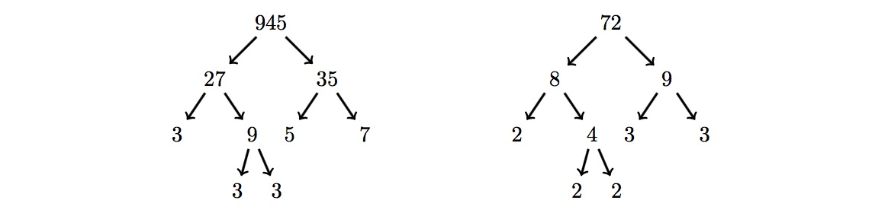

Problem 829: "Integral Fusion" (level 21)
Given any integer $n \gt 1$ a binary factor tree $T(n)$ is defined to be:
- A tree with the single node $n$ when $n$ is prime.
- A binary tree that has root node $n$, left subtree $T(a)$ and right subtree $T(b)$, when $n$ is not prime. Here $a$ and $b$ are positive integers such that $n = ab$, $a\le b$ and $b-a$ is the smallest.
For example $T(20)$:

We define $M(n)$ to be the smallest number that has a factor tree identical in shape to the factor tree for $n!!$, the double factorial of $n$.
For example, consider $9!! = 9\times 7\times 5\times 3\times 1 = 945$. The factor tree for $945$ is shown below together with the factor tree for $72$ which is the smallest number that has a factor tree of the same shape. Hence $M(9) = 72$.

Find $\displaystyle\sum_{n=2}^{31} M(n)$.